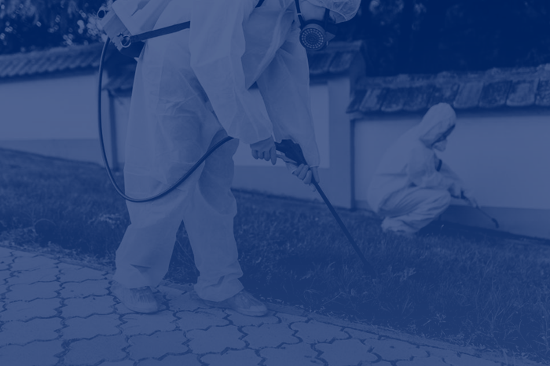
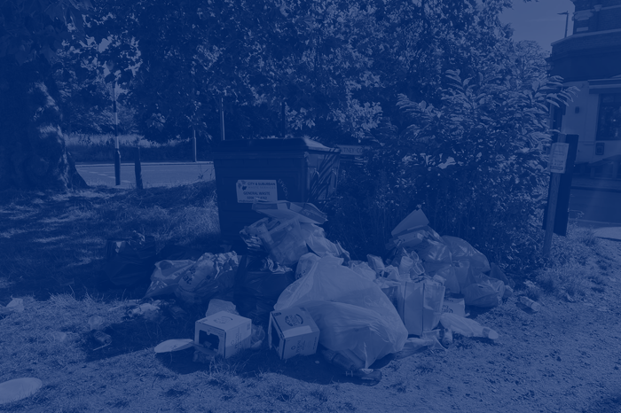

Eficiência e Controle Especializado de Pragas
A dedetização ou serviço de controle e eliminação de pragas é feito em variados segmentos e tem como objetivo evitar a atuação de pragas e sua proliferação através de técnicas especializadas.
Esse trabalho é feito de acordo com o tipo de praga, suas características biológicas e a área de segmentação. Entre as pragas mais comuns no estado do Rio de Janeiro, destacam-se baratas, traças, formigas, moscas, mosquitos, cupins e ratos.
A Insetcarioca dispõe de excelentes profissionais com experiência e treinamento adequado para definir qual método deve ser utilizado no local a fim de obter eficácia e resultado máximo com o mínimo impacto ambiental.
Dedetização no Rio de Janeiro
No Rio de Janeiro é muito comum a proliferação de pragas devido ao clima tropical quente e úmido, aos restos de comida, acúmulos de lixo, água parada e falta de uma dedetização periódica.
É ideal sempre inspecionar o local, além de limpá-lo frequentemente e não acumular entulhos ou materiais em desuso. É importante não criar condições para as pragas se instalarem no ambiente e ter o controle das pragas no seu estabelecimento sendo feito de forma recorrente através de uma dedetizadora certificada pelo INEA e capacitada pela ABCVP.
A Insetcarioca realiza serviços de desinsetização em residências, condomínios e empresas com especialistas capacitados para atender de forma satisfatória os clientes, visando o seu bem estar e conforto. Nossos produtos são certificados pela ANVISA e os equipamentos são de alta tecnologia.

Dicas para Evitar a Proliferação de Pragas
- Procure manter os alimentos em potes bem tampados e em armários fechados;
- Evite restos de alimentos jogados, lixos mal vedados e frestas em pisos e paredes;
- Procure sempre vedar bem os locais onde seu lixo é descartado;
- Faça limpeza constante dos ambientes de sua casa, especialmente banheiros e cozinha para evitar a proliferação de pragas;
- Realize serviços de dedetização periodicamente a cada 6 meses;
- Não tente eliminar as pragas por meio de produtos e métodos caseiros que podem ser tóxicos ou apenas espalhar os insetos;
- Mantenha atenção aos possíveis sinais deixados pelas pragas no imóvel (fezes, asas caídas, serragem de madeira);
- Assim que identificar a presença de pragas ligue imediatamente para a Insetcarioca.